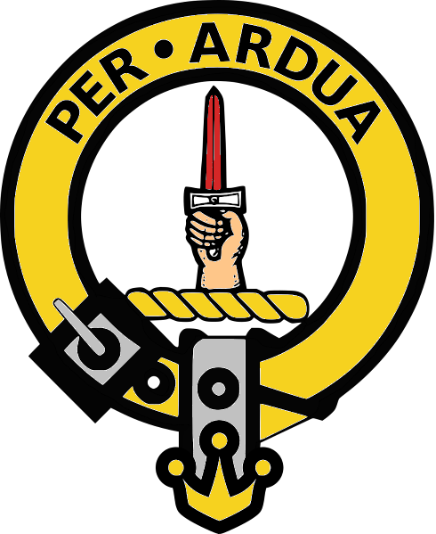
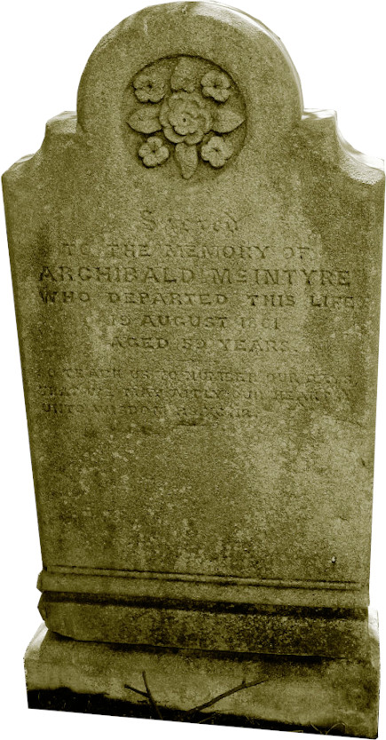

-

The McIntyres in Australia
A Tale of Two Entire Families - Part 3
There are lots of McIntyres who went to Australia including our direct ancestors Archibald and Jessie belonging to the Kilmonivaig Mcintyres who are covered elsewhere. They eventually met up with the Glenartney McIntyre family members who had arrived in the colony a little earlier. Archibald's brothers John, Allan, William, Donald, and Duncan Kennedy all migrated to Australia and most if not all of them took to buying land in the new colony. William, as was mentioned elsewhere married Mary, one of the Glenartney McIntyres. Mary and William built themselves a 22 room house on their Pitnacree Estate which Mary had inherited from her brother Peter.
It's rather difficult to establish when the first McIntyre brothers to arrive in Australia, Donald and John, actually did turn up. They seemed to have paid their own way and as such are not listed in Australian historical records which are mostly interested in transported or assisted passage. There were also many sparsely documented cargo ships carrying cabin passengers arriving in New South Wales so they could just as easily have slipped in that way.
The first of the brothers clearly documented is Rev. William McIntyre, who arrived in 1837 on board the Mid Lothian along with a group of hand picked Highland worker-families from the Isle of Skye. William rapidly made a name for himself as the Gaelic speaking preacher and teacher of Scottish protestant ethics. He encouraged his brothers Allan and Duncan Kennedy to also become Reverends and join him on his mission in the colony. They arrived in 1854 with lots of other family and friends on the Berhampore just a few months after Jessie and Duncan had made the trip.
In March of 1854, Jessie arrived in New South Wales from Scotland with all seven of her children including the eldest, Duncan, and his new wife, Isabella and their child. Archibald is believed to have travelled earlier, probably to set up their new home before the rest of the family arrived. It is likely he landed in Sydney via the Prince of the Seas in March of 1853. Duncan, the eldest child was 23 at the time and the youngest, Mary, about three or four. So they would have had their hands quite full bringing everyone into safe quarters upon arrival. Our main interest here is the family of Archibald and Jessie and what happened to their descendants.
» Archibald McIntyre (1804-1861) and Jessie Dewar Halling (1808-1887) had the following children:
Duncan 25.06.1830 –
*Glasgow15.09.1916
†Wardellm. 12.02.1851 Isabella Kelly
m. 23.19.1865 Ellen Kirby
m. 19.05.1875 Elizabeth McDonaldElizabeth Campbell 20.04.1832 –
*Glasgow02.03.1835
†Glasgowalmost three years old Flora Mary ??.??.1835 –
*Glasgow03.02.1878
†Sydneyunmarried Katherine Amelia Campbell 27.09.1836 –
*Glasgow07.11.1916
†Sydneym. 24.05.1860 John Bridge John Archibald 20.09.1841 –
*Edinburgh05.08.1927
†Toowoombam. 20.08.1863 Christina Campbell
m. 1877 Isabella Martha Muirson
m. 1886 Mary Agnes Clarke
m. 02.11.1895 Elizabeth OliverEglantine Jane Upton Balfour MacDougall 29.08.1845 –
*Edinburgh19.07.1920
†Inverellm. 04.03.1862 John McGregor William McKinnon ??.??.1849 –
*Edinburgh10.11.1933
†Strathfieldm. 1888 Catherine McIntyre Kennedy Maclardy Mary Georgina ??.??.1850 –
*Edinburgh03.11.1901
†Sydneym. 31.03.1870 John Cameron Campbell 
Millers Point in Sydney
Since Duncan was a fully qualified Baker, he naturally enough set himself up in a bakery business in Sydney. This he did at Millers Point, aptly named by the presence the flour mills there, which were needed by the rapidly flourishing settlement. If Archibald did indeed arrive in the colony before his family it would be more than likely that he found the location for Duncan's new bakery and residence at 41 Windmill Street and it was there that the family was first brought under cover upon arrival.On to Maitland
Soon after their arrival in Sydney, Archibald and Jessie moved to Maitland in the Hunter Valley where Archibald's brother William had already established a home and school. In Maitland, Archibald and Jessie's children were educated not only by the same rigorous Highland style taught by William, they also had a good serving of education in colonial life from their other uncles.
John Archibald, for instance became so savvy with property dealings he was already a manager at the end of his teens. He went on to become one of 'the McIntyres' of New England fame. His sister, Amelia married the future wool brokering tycoon, John Bridge, in Maitland and later moving to Sydney. Sister Flora established a Catholic School in Maitland and in her later years, not having married, moved in with the Bridges in their Sydney residence.
Another daughter, Eglantine, married John McGregor, an imposing Scot from Dunstaffnage, who was also managing properties throughout his life. Jessie and Archibald's youngest child, Mary Georgina also married a property owner, John Cameron Campbell, and lived fairly close to her brother John Archibald who was in New England by that time. William McKinnon, the second youngest hooked up with one those close family ties who had accompanied William and his brothers to Australia.Brushy Hill near Musclebrook
Over the course of a few years, Jessie became a grazier, having progressively acquired land, in her name, at Brushy Hill near Musclebrook (later known as Muswellbrook) in the Upper Hunter River Valley. The five parcels of adjoining lands at Brushy Hill, two of which were first taken up by Archibald's brother Donald and William's wife Mary and then passed to Jessie, eventually became known as a property called Bethel. It's a curious name and since there is not much to go on when researching what Archibald and Jessie were up to in Australia, it's probably worth investigating.
Most people arriving in the colony of New South Wales had a tendency to name their new property after some place they had left behind in the old country. Originally people were being located in the countryside according to these property names but later as towns and cities grew up around the earlier settlements, street names and street numbers became more important. Archibald and Jessie were amongst the last settlers to call their property by a name. But life in the colony was not easy. Archibald's brother John died in April 1857. In September 1860 as a result of injuries he incurred at the Maitland Riots, brother Donald also died. Soon afterwards in May of 1861, Jessie's mother back in in Scotland also passed away and then as a final blow after only another four months, Archibald himself died.
Archibald's restored headstone (photo 2022 from his 3rd-great-granddaughter Rebecca Reardon)
 The epitaph on Archibald's headstone reads:
So teach us to number our days that we may apply our hearts unto wisdom. PS XC:12.
The name "Bethel" has quite obviously something biblical about it and it seems to hold some sort of hidden message. Hidden in the sense that they must have known what it meant but were leaving it up to everyone else to figure it out. In the Bible there are many references to Bethel as a House of God, or a place where there was a ladder to God, but that still doesn't offer up much of a starting point.
Wikipedia says: Bethel is mentioned in Ezra 2:28 and Nehemiah 7:32 as being resettled at the time of the return of the exiles from Babylon. The word "resettled" seems to strike a chord, as Archibald and Jessie were definitely early Australian settlers. Indeed, in the Postal Directory for New South Wales, Jessie had herself listed at Brushy Hill as "Mrs A. McIntyre, settler". So that could mean that they had left behind them a Babylon of sorts. Babylon of course was an ancient empire and perhaps it was just simply a quip about Scotland or Britain being the "old country", an ancient empire.
Duncan McIntyre, our great-great-grandfather
Duncan, the eldest son of Archibald and Jessie, married three times. All three wives were Catholics.
The first was Scottish, the second was Irish, the third was born in Australia to Scottish parents.
His third wife was the sister of John McDonald, the husband of his eldest daughter, Jessie (our great-grandmother).
Duncan survived all three of his wives.
» Duncan married his 1st wife Isabella Kelly (1832-1863) in Edinburgh on 12.02.1851 and they had the following children:
Archibald Royston ??.??.1852 –
*Glasgow21.03.1922
†Wardellm. 05.05.1880 Clida Blanch Gulliver in Wardell Donald ??.??.1853 –
*Edinburgh12.05.1876
†Sconeunmarried, died from tuberculosis Joseph ??.??.1835 –
*Sydney??.??.1857
†unknownunmarried Duncan Joseph ??.??.1858 –
*Sydney24.11.1937
†Sydneym. 13.04.1892 Jessie Hay Cameron in Sydney Jessie Halling ??.??.1860 –
*Sydney10.01.1911
†Corndalem. 17.07.1879 John McDonald in Wardell William Kellie ??.??.1862 –
*Sydney01.07.1934
†Sconeunmarried
Upon arrival from Scotland, Duncan and Isabella lived at Millers Point in Sydney where Duncan practised his profession as a master baker. After Duncan's grandmother Catherine died in May of 1861 and Duncan's father in September, he turned up at his mother's place in Bethel near Scone presumably to look after the legals. Isabella died aged 31 in Sydney 6 dec 1863, possibly from an illness or from giving birth. Duncan then moved to the Nothern Rivers and possibly left his children with his mother.
» Duncan married his 2nd wife Ellen Kirby (1840-1875) in Pimlico on 23.10.1865 and they had the following children:
Ellen Isabella 11.08.1866 –
*Pimlico26.09.1943
†Drummoynem. 03.01.1885 Ernest Charles Miller in Rocky Mouth Flora McDonald 27.06.1869 –
*Wardell10.07.1946
†Tweed Headsm. 06.04.1892 John William Benson in Wardell John Angus 10.03.1870 –
*Ballina07.05.1950
†Sydneym. 27.04.1896 Frances Clara McColm in Summer Hill Allan Roy 07.01.1873 –
*Ballina23.05.1950
†Waverleym. 05.09.1894 Alice Maude Sayers in Kogarah
Duncan allegedly supervised the building of a ship in Pimlico. He then moved to Wardell and literally set up shop there, his first being on one side of the Richmond River and then another on the other side at East Wardell. He supposedly ran ships, moving produce outbound and merchandise back into the Northern Rivers. Duncan also had his hands in many land and property transactions, including mills and a hotel. Upon Duncan's retirement, Allan Roy took over the shop business. Ellen died aged 34 on 3rd January 1875 and Duncan remarried a few months later.
» Duncan married his 3rd wife Elizabeth May McDonald (1848-1913) in Broadwater on 19.05.1875 and they had the following children:
Clarence Duncan 15.02.1876 –
*Wardell01.07.1946
†Kogarahm. 1898 Annie May West in Balmain Elizabeth McDonald 14.02.1878 –
*Wardell17.01.1950
†Rose Baym. 02.07.1898 Michael Thomas Morris in Wardell Eliza Clinton Neild 22.05.1879 –
*Ballina21.04.1961
†Sydneym. 1898 Thomas Mulhearn in Ballina Joanna Campbell ??.??.1880 –
*Ballina31.12.1951
†Brisbanem. 1898 William Rudgley in Ballina Eglantine Balfour 26.04.1883 –
*Wardell26.04.1915
†Balmain32 years old, probably unmarried Malcolm McKinnon Campbell 01.10.1885 –
*Wardell19.09.1944
†Brighton-Le-Sandsm. 1921 Lorna Louise Gunter in Rockdale Alexander Duncan 07.07.1886 –
*Wardell13.07.1886
†Wardellsix days old Clara Georgina 18.07.1887 –
*Wardell02.03.1954
†Sydneym. 1917 William Frayling Talbot in Sydney Olive Rachael 06.07.1889 –
*Wardell22.06.1972
†St.Leonardsm. 18.08.1928 Ernest James Cochrane in Sydney Roderick Dhu 15.12.1891 –
*Randwick24.12.1927
†Sydneym. 03.08.1918 Constance Edith Jackson in Sydney
Upon Duncan's death four of his children from this last marriage became executors of his estate but there was a caveat that the estate couldn't be sold for a specified number of years. The youngest child Roderick Dhu was left 20 pounds and successfully sued the estate for more. When Duncan's mother Jessie died in 1887, he and his brother John Archibald became executors of her estate. They sold her grazing property called Bethel and distributed the funds. Elizabeth May died aged 64 in Ryde 24 August 1913. Duncan died aged 86 in Wardell 16 September 1916.

{kind=link}
{kind=link}
{kind=link}
{kind=link}
{kind=link}
About Us
We are the descendants of Anglo-Scottish-Prusso-Germanic Australian migrants who settled in the newly formed colonies of New South Wales and Queensland in the nineteenth century. The idea behind these pages is to present the stories and characters of those early settlers along with information about their origins, descendants, families, whereabouts and activities.There are often themes running through their struggles and achievements telling a tale of resourcefulness and hardships in an alien world. The paradox of Australia as an ancient and raw continent and as a 'New World' portrays a collision of ideals and realities yet still shows a continuity in how those people dealt with everyday life.